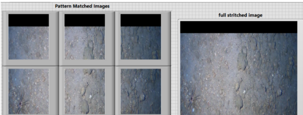
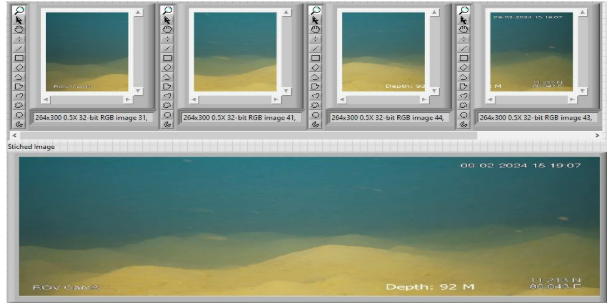

M.Tech Embedded Systems | Electronics & Communication Engineer
📧 rtharunkumar0403@gmail.com | Chennai, India
I am Tharunkumar R, currently pursuing M.Tech in Embedded Systems at Amrita Vishwa Vidyapeetham. I specialize in building embedded systems combining hardware and software for real-world applications.
I enjoy working with STM32, ESP32, Arduino, and Raspberry Pi. My focus areas include sensing systems, automation, and intelligent embedded solutions.
Designed an embedded collision avoidance system using STM32 with ultrasonic and IR sensors.
Developed a machine learning model using MFCC and neural networks.
Built a healthcare monitoring system for real-time patient observation.
Developed an image stitching system to generate orthomosaic views of underwater environments using feature matching, homography estimation, and image blending techniques.

